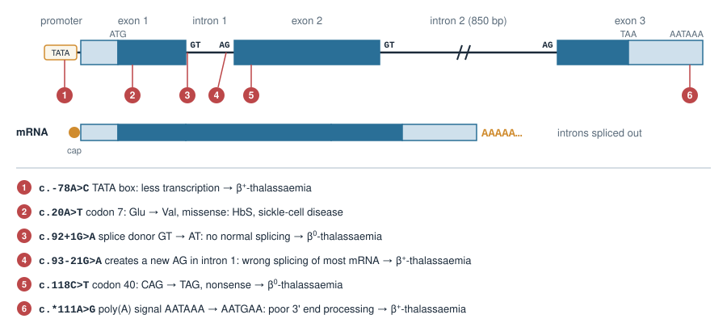
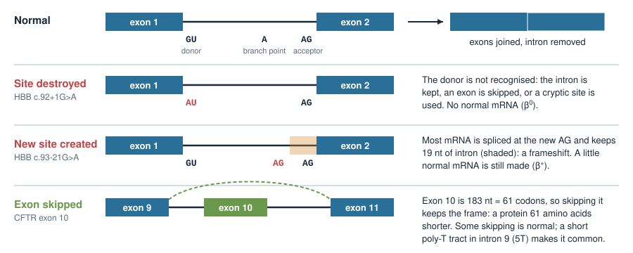
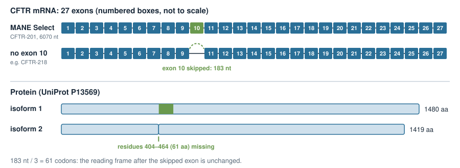
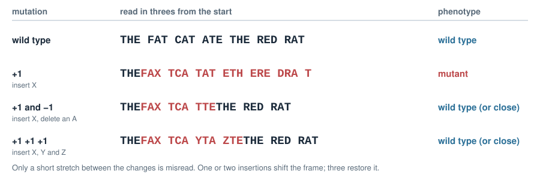

Part 3: DNA, mutation & gene function. Transcription, splicing, translation and the genetic code, and how mutations break each step
Basic and molecular genetics (5MO104)
About this lecture
Recap of 5MO103 (Microbiology and basic molecular biology). You know how a cell reads a gene. Here we ask the geneticist’s version of the question: where in a gene can a mutation act, and what does it do?
The anatomy of a gene, and six real HBB mutations that hit six different steps.
Transcription and RNA processing: promoters, caps, poly(A) tails and splicing.
Splicing mutations, and alternative splicing: one gene, many transcripts (CFTR in Ensembl and UniProt).
Translation and the genetic code, and how frameshift mutants proved that the code is read in triplets (Crick and Brenner).
Book: Hartwell, Genetics: From Genes to Genomes, Gene expression: the flow of information from DNA to RNA to protein chapter.
Where can a mutation act?

Six real disease variants in one small gene, HBB (all classified as pathogenic in ClinVar). Only two of them change a codon.
Transcription, in brief
RNA polymerase II binds the promoter with general transcription factors (TFIID binds the TATA box, about 25–30 bp upstream of the start).
It reads the template strand 3′ → 5′ and makes RNA 5′ → 3′, so the RNA has the same sequence as the coding strand (with U for T). That is why genes are written as the coding strand.
Enhancers and transcription factors set how much RNA is made, and where and when: Part 6.
The genetic lens. Promoter mutations change how much product is made, not what it is. HBB c.-78A>C changes the TATA box CATAAAA to CATACAA: less transcription, β+-thalassaemia. Such cis-acting mutations affect only the copy of the gene on the same chromosome.
Processing: cap, tail and splicing
A eukaryotic pre-mRNA is processed while it is being made:
Step
What happens
A mutation that breaks it
5′ cap
a 7-methylguanosine is added to the 5′ end; needed for export and translation
3′ end
the RNA is cut about 10–30 nt after AAUAAA, and a poly(A) tail is added
HBB c.*111A>G: AATAAA → AATGAA, β+
Splicing
the spliceosome removes introns: GU at the 5′ end (donor), a branch-point A, AG at the 3′ end (acceptor)
HBB c.92+1G>A (donor), c.93-21G>A (new acceptor)
Introns can be long. CFTR spans about 189 kb of chromosome 7, and its mRNA is 6.1 kb: only about 3 % of the gene ends up in the mRNA.
Splicing mutations

About one in ten disease-causing point mutations affects splicing. A “silent” or intronic change is not always harmless.
Alternative splicing: one gene, many products
Most human multi-exon genes are alternatively spliced: exons can be included or skipped, and different starts and ends can be used.
CFTR in Ensembl (release 116): 45 transcripts, of which one is the MANE Select transcript (ENST00000003084, = RefSeq NM_000492.4): 27 exons, a protein of 1480 amino acids.
UniProt P13569 lists 3 isoforms. Isoform 2 lacks residues 404–464: exactly the 61 codons of exon 10.

Translation, and nonsense-mediated decay
The ribosome starts at the first AUG in a good context, and reads codons in one frame until a stop codon (UAA, UAG, UGA).
tRNAs match codons by base pairing with their anticodon; the third position pairs loosely (wobble), which is why many synonymous codons differ only in the third base.
Nonsense-mediated decay (NMD). In a normal mRNA the stop codon is in the last exon. If a premature stop codon lies well upstream of the last exon–exon junction, the mRNA is recognised and destroyed.
The genetic lens. NMD means that a nonsense allele such as CFTR G542X (in exon 12 of 27) usually makes almost no protein, not a short one: it behaves as a null allele. Ensembl labels transcripts with such early stops with the biotype nonsense_mediated_decay: CFTR has 11 of them.
each base belongs to one codon; reading from a fixed start
single base changes alter one amino acid (HbS)
Degenerate
61 sense codons for 20 amino acids; 3 stops
silent mutations
(Nearly) universal
the same in bacteria, plants and animals, with small exceptions (e.g. UGA = Trp in vertebrate mitochondria)
human genes are expressed correctly in E. coli
The meaning of the codons was found biochemically: Nirenberg and Matthaei (1961) showed that poly-U RNA makes poly-phenylalanine, so UUU = Phe; by 1966 all 64 codons were assigned.
Crick & Brenner: the code is read in triplets

Crick, Barnett, Brenner and Watts-Tobin (1961) used proflavin to make frameshift mutants in the rII gene of phage T4. Combining them:
one (+) or one (−): mutant. (+)(−) close together: wild type again (intragenic suppression).
(+)(+) or (−)(−): mutant. (+)(+)(+) or (−)(−)(−): wild type.
Only a code read in threes from a fixed start explains this, years before any codon was known.
Summary
Step
Key fact
Mutation example (HBB unless noted)
Transcription
Pol II at the promoter; RNA = coding strand sequence
c.-78A>C, TATA box: less mRNA (β+)
3′ end
cut after AAUAAA, poly(A) added
c.*111A>G in AATAAA (β+)
Splicing
GU…A…AG; spliceosome
c.92+1G>A destroys a donor (β0); c.93-21G>A creates an acceptor (β+)
Exercise in R: an exon-coordinate table for all 45 CFTR transcripts (Ensembl 116): exon and transcript lengths with group_by() and summarise(), and an exon diagram with geom_segment().
Part 4: Genome analysis. Finding genes and open reading frames in raw sequence, and browsing exons, transcripts and variants in Ensembl and UCSC.
Part 6: Gene regulation. How transcription factors, enhancers, chromatin and RNAs control how much of each transcript is made.